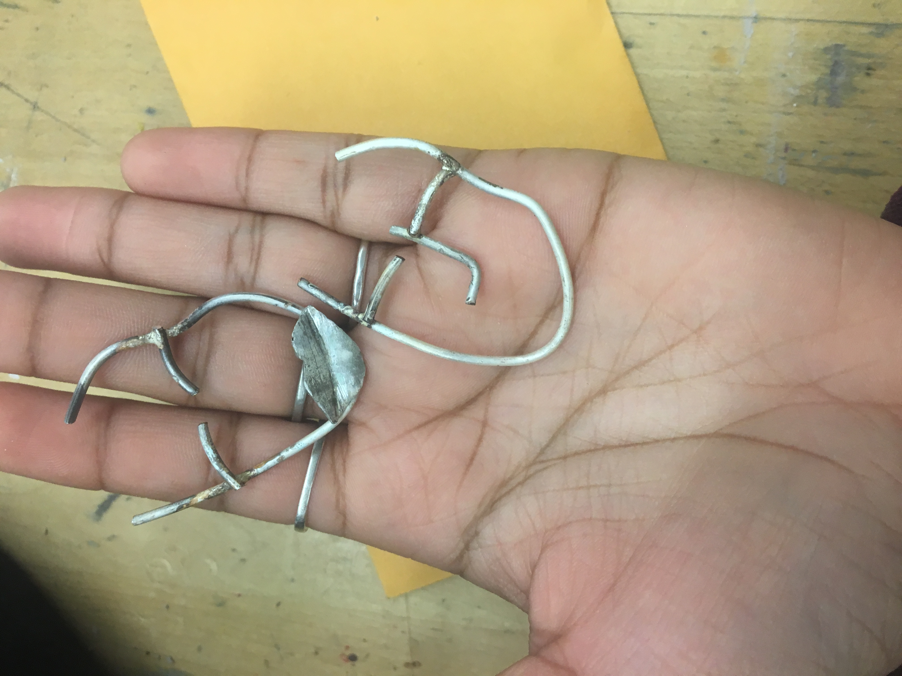
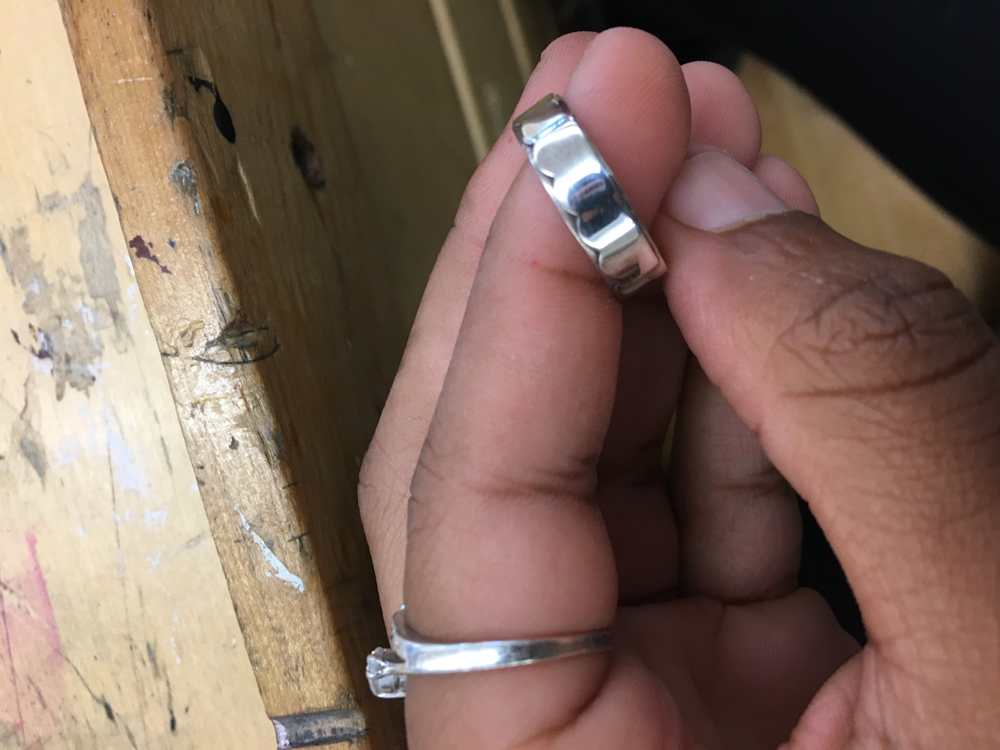

Portfolio
My name is Noire Kerr I am very intrested in art,specifically metal working/jewelry making. I find metal working/jewelry making to be very inspiring because you never know what you might make, you might make something small like a ring or a pendant or you might make something big like a sculpture or a necklace, bracelet. when creating an object with metal your mind becomes open to all the thing that you can create and thats what I love. below are pictures of my previous projects.
 